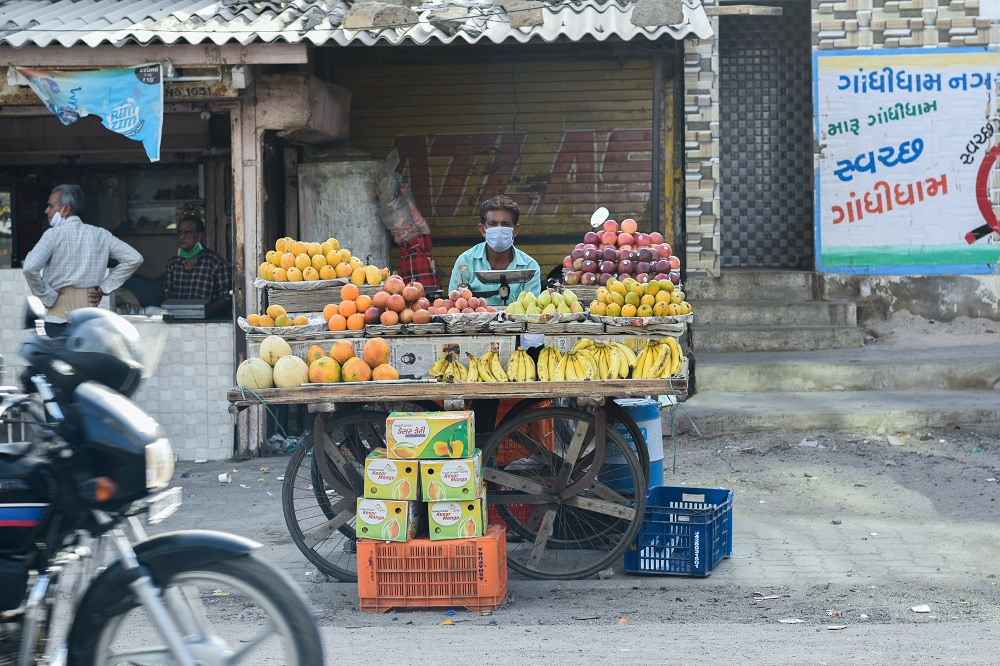
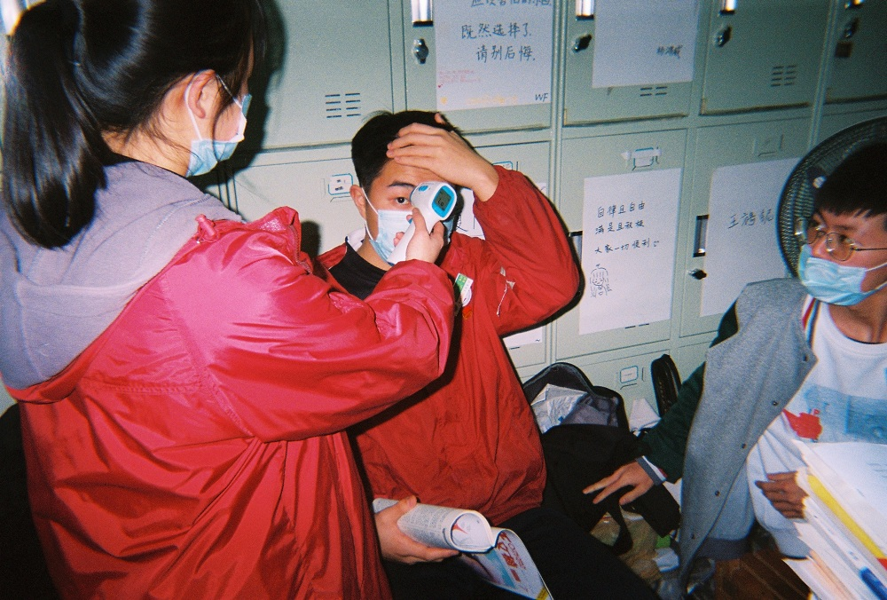

Penerapan transisi new normal atau kebiasaan baru mau tidak mau harus dilakukan sebagai langkah beradaptasi dengan kondisi sekarang yakni, pandemi Covid-19. Menurut Psikiatri Fakultas Kedokteran Universitas Sumatera Utara (FK USU) Dr dr Elmeida Effendy MKed KJ SpKJ (K), dengan kondisi new normal ini terdapat dampak positif dan negatif pada masyarakat.
Dampak Positif

“Dampak positifnya bila melihat dinamika perubahan di lapangan secara cepat, akan pembuatan kebijakan yang biasanya lama menjadi cepat karena menggunakan online meeting sehingga anggaran perjalanan dinas lebih hemat,” kata Elmeida yang juga Ketua Departemen Psikiatri FK USU pada Mistar, Senin (8/6/20).
Bahkan, sambungnya, masyarakat harus membiasakan diri berperilaku hidup bersih. Harus dimulai dari diri sendiri dan berupaya menularkannya pada orang lain.
Harus rajin cuci tangan dengan air mengalir dan sabun, makan-makanan bergizi, olahraga teratur, istirahat yang cukup. Mempersiapkan segala bentuk protokol kesehatan menuju new normal ini dengan menerapkan waktu kerja yang fleksibel dan penyesuaian jam kerja.
Tak hanya itu saja, dalam pencegahan penyebaran virus corona ini, sambung wanita yang disapa Mici ini, juga akan membudaya perilaku hidup bersih sehat, cek suhu tubuh, menggunakan masker, tetap menjaga jarak, mengurangi kontak fisik, menghindari pertemuan dengan jumlah orang yang banyak.
“Bagi masyarakat yang berusia di atas 45 tahun akan melanjutkan bekerja dari rumah atau bagi yang memiliki kondisi medis tertentu akan membatasi jumlah hari kerja,” sebutnya. Bahkan, untuk kegiatan akademik dilangsungkan secara daring (online), menggunakan media informasi untuk menyampaikan standar pelayanan baru.
Menggunakan media komunikasi daring sebagai wadah konsultasi maupun pengaduan memasang pesan-pesan kesehatan terkait penanganan dan pencegahan Covid 19.
“Untuk di lingkungan kerja akan terbiasa untuk memastikan ketersediaan masker, tisu, tempat sampah tertutup di lingkungan kerja. Tersedianya sarana cuci tangan menggunakan air dan sabun atau hand sanitizer di berbagai lokasi strategis. Adanya pembatasan orang yang menggunakan lift, posisi di lift saling membelakangi. Kita juga tidak saling berjabat tangan. Bahkan perubahan lainnya, juga masyarakat akan membawa peralatan makan dan ibadah sendiri. Membersihkan meja kerja dengan desinfektan, menggunakan siku untuk membuka pintu dan menekan tombol lift,” terangnya.
Dampak Negatif

Sedangkan untuk dampak negatifnya, bila tergesa-gesa dalam pemberlakuan new normal ini, akan sangat berdampak buruk pada sektor kesehatan dan ekonomi. Dalam sektor kesehatan kasus positif Covid-19 ini akan melonjak.
“Gelombang kedua Covid-19 akan timbul, meski yang pertama pun belum reda. Sehingga rakyat semakin tidak percaya dengan pemerintah. Oleh karenanya perlu masa transisi menuju new normal ini. Seperti hari ini saja program studi psikiatri FK USU untuk pertama kalinya melakukan pemberian tanda keahlian dokter spesialis kedokteran jiwa secara online, ini merupakan yang pertama di program studi pendidikan spesialis di FK USU, dan semoga dapat diikuti oleh program studi program studi lainnya. Sebab yang dilantik dan tamu hanya bertemu secara online, namun tidak mengurangi kebahagiaan karena bisa dinikmati secara langsung (live) dari berbagai penjuru kota bahkan dunia,” pungkasnya.(anita/hm10)